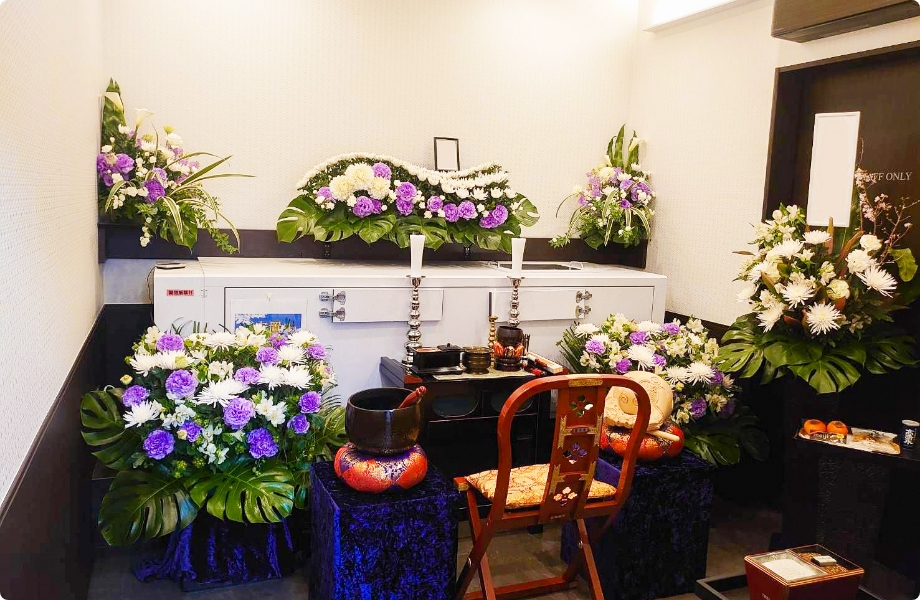
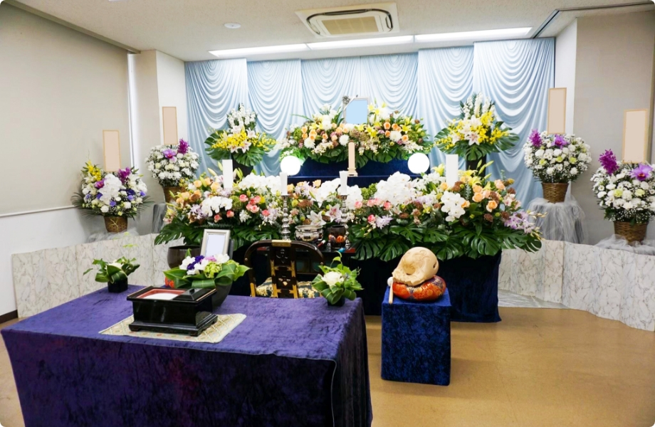

葬儀について
葬儀について
-
直寺葬
直寺葬とはお通夜や告別式をおこなわず、直接火葬場で短時間のお別れと火葬・収骨のみをおこなうご葬儀のことを「火葬式」といい、別名「直葬」ともいわれています。
・直葬にお経のみを施します
・医王寺では小さなお部屋（ペルソナ室）を使用しご対応いたします -

一日葬
一日葬とはお通夜を行わずに、葬儀・告別式と火葬を1日で執り行う葬儀です。
-
家族葬
家族葬とは少人数で行う小規模な葬儀スタイルのことです。 「家族」という名がついていますが参列者は家族だけとは限りません。 故人が生前特に親しかった友人なども交え、10～30人程度の少人数で執り行うものです。
-

普通葬
普通葬とは参列者を限定せず広く一般の方に故人の弔いに参列していただくスタイルです。 一般の方といっても故人の親族や知人、職場の関係者や近所の方、喪主をはじめ故人の家族の知人や関係者など、なんらかの関係がある方たちを指します。
-
社葬
社葬とは創業者や社長、会長をはじめとした経営陣など、その会社の発展に大きく貢献した人が亡くなった際に行う葬儀です。 遺族や近親者が施主を務める通常の葬儀と異なり、故人が属していた会社が施主を務めるというのが、社葬の大きな特徴です。
-
お別れの会
お別れの会とは故人を偲んでおこなわれる自由なスタイルの会です。 故人が亡くなった直後に遺族や親族のみで密葬や家族葬を行い、後日一般の参列者を招いてお別れの会をするという形で執り行います。